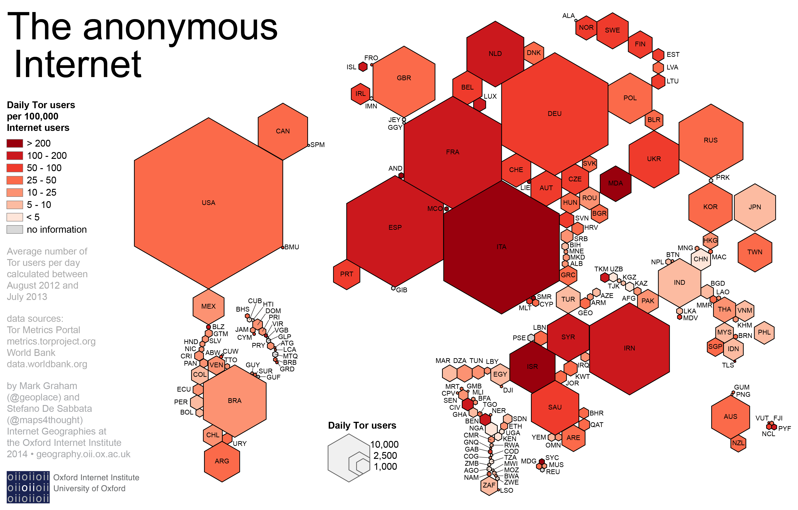

Last modified: Sat Feb 03 2018 17:09:35 GMT+0100 (Central European Standard Time)
Contre-cultures digitales & hacktivisme
1. L’art et la Cybernétique
Le monde de l’art et celui des ingénieurs informatique ont utilisés des concepts apparement semblable. Existe-t-il un modèle commun, secret?
Une dimension importante de la science se trouve dans l’intérềt de l’histoire à se souvenir de celui qui a inventer quelque chose. L’histoire n’est qu’une fraction de ce que l’on a bien voulu retenir.
Cette dimension ressemble fort à ce qui est en jeux également en art où l’on s’atèle à produire des images/histoire mémorable.
C’est un combat incessant entre les artistes pour connaître ceux qui seront retenu de l’histoire.
Il y a tellement de données en sciences qu’il devient difficile d’en faire de nouvelles histoires. Peut-être est-ce un des rôles de l’art.
Dans les années 60, personne ne parlait encore de cybernétique mais tout le monde lisait McLuhan.
2. Le darknet
2.1. Comment s’y rend-on? À quoi cela sert-il?
Grace à Tor!

source: http://geography.oii.ox.ac.uk/?page=tor
https://en.wikipedia.org/wiki/Hacktivism
3. Telecomix
C’est un groupe décentralisé d'activistes du net, engagés en faveur de la liberté d'expression. Le nom Telecomix désigne à la fois WeRebuild et Telecomix.
WeRebuild est un projet collaboratif utilisé afin de proposer et de discuter des lois, ainsi que de collecter des informations à propos de la politique et des politiciens. Telecomix est l'organe opérationnel qui exécute les projets et les propositions présentés par WeRebuild.
Le 15 septembre 2011, Telecomix a détourné toutes les connexions au web syrien, et a redirigé les internautes vers une page qui contenait des instructions permettant de contourner la censure.
Telecomix et le printemps arabe
4. L’internet des objets
Google pour l’IDO : https://www.shodan.io/
5. La quadrature du net
La Quadrature du Net est une association de défense des droits et libertés des citoyens sur Internet. Elle promeut une adaptation de la législation française et européenne qui soit fidèle aux valeurs qui ont présidé au développement d'Internet, notamment la libre circulation de la connaissance.
À ce titre, La Quadrature du Net intervient notamment dans les débats concernant la liberté d'expression, le droit d'auteur, la régulation du secteur des télécommunications ou encore le respect de la vie privée.
Elle fournit aux citoyens intéressés des outils leur permettant de mieux comprendre les processus législatifs afin d'intervenir efficacement dans le débat public.
Ses statuts sont visibles ici et le règlement financier ici.
Faire rapport sur la question de la neutralité du net et spécialement des fournisseur d'accès.
6. Réalité virtuelle
HYPER-REALITY from Keiichi Matsuda on Vimeo.
6.1. Quelques addresses
The Hidden wiki http://zqktlwi4fecvo6ri.onion/wiki/